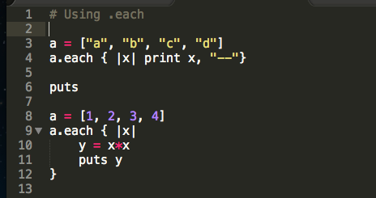
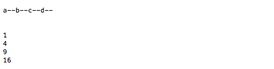
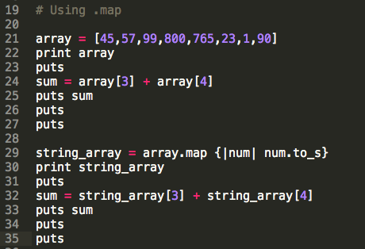
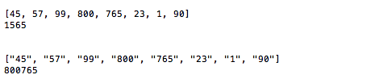

Useful Methods
Enumerable Methods
Enumerable#map
We will focus on the use of .map and .each. I will show the use of both and illuminate some differences and some advantages of .map over .each.
.each
Let's look at .each first.
.each is nice for calling a block once for each element in an array. The element is passed as a parameter.
The block is preformed and then the computer is given as outputs returned values.
Two Examples using .each
An example of some code utilizing .each
An example of the output .each
.each works great to iterate, to go through an array element by element and preform a specific task.
However, once done, you only new data. Your data is provided as only returns, not actual variables. As the coder you can save them to a data structure, but this is more code.
Now, for something special, for something more compact*.
.map
.map moves us to move through every element in an array in much the same manner as .each.
.map allows us to preform some specific task on every element.
*However, .map adds these output automatically to a new array.
We do not have to write the code that stores this new information, it is stored for us!
This allows us to reduce code.
How NICE!
Two Examples using .each
An example of some code utilizing .each
An example of the output .each
*I know that there are more lines of code and I promised something more compact. It actually is. The portion of code to look at is actually line 21 the array is defined, line 29 the .map is applied, and line 30 is only to verify that the new array exists.
Only 2 lines of code!
Wrapping it up
Both .each and .map would be useful in debugging by allowing us to loop through vast amount of data quickly.
The benefit again being that .map provides us a new object with all of the results stored for us to access later.